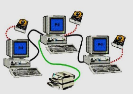
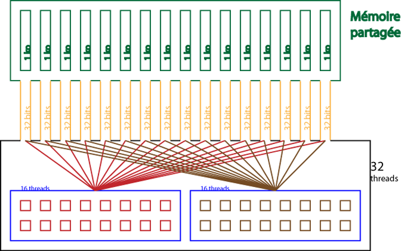

1- Partages des Fichiers :
Le partages des fichiers et l’accès à ces derniers à distance est l’une des nombreuses utilités irremplaçables dans la vie courante. En effet, une personne travaillant sur un ordinateur d’un réseau peut facilement accéder aux fichiers présents sur les autres ordinateurs du réseau. Cet accès soit en lecture seule, soit en écriture, en fonction de la configuration du réseau.
Note:
Cela se montre trop utile dans le travail des entreprises à distance ce qui améliore considérablement la productivité. Une des services les plus importants et très répandu est GitHub qui est un dépôt de fichier en ligne.

2 – Partages des ressources :
A - Pour se connecter de sa maison on devrait avoir pour chaque ordinateur un modem. B - Pour imprimer des documents on aurait besoin d’une imprimante pour chaque ordinateur (À moins que vous débranchiez cette dernière à chaque utilisation mais ce n’est pas trop pratique. XD) Alors les réseaux informatiques permettent de connecter les ordinateurs de tel façon que vous n’auriez besoin que d’un modem et d’une imprimante pour un ensemble d’ordinateur ce qui offre une diminution remarquable dans le prix d’achat. Vous pouvez projeter cela sur tous les autres périphériques.
Note:
Cela est un atout non négligeable spécialement pour les entreprises qui essayent d’améliorer la productivité tout en diminuant les dépenses.
3 – La mémoire partagé :
Un seul ordinateur peut avoir une capacité de stockage relativement modeste. Du coup un groupe d’ordinateur peut compenser ce manque et mettre en place un mémoire partagé peut vachement être utile pour de gros projets ou bien des utilisations personnelles poussés. On peut également concevoir un serveur de stockage sur le réseau afin d’avoir une capacité de stockage énorme.
4- La communication entre les membres du réseau :
La communication électronique est facilitée avec le réseau informatique, notamment à travers la messagerie interne ou externe. Par ailleurs, l’accès à internet est également facilité. En bref, les réseaux informatiques vous facilitent le partage des données entre vos ordinateurs, optimisant ainsi l’exploitation des ressources et l’amélioration de rendement de service dans votre entreprise.